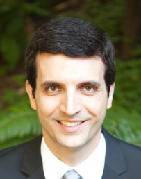

Alessandro Coglio

General
I work in computer science, primarily formal methods and their application to a variety of domains.
My activities range from theoretical research to code development.
I'm on
LinkedIn,
GitHub,
and no (other) social network.
I'm reachable at X@Y.Z, where: X=email, Y=alessandrocoglio, and Z=info.
Jobs
I'm a Research Scientist at Provable Inc.
(formerly Aleo Systems Inc., which became Provable Inc. when spinning off the Aleo Network Foundation),
where I mainly work on formal verification, but also contribute to design, documentation, and implementation.
My focus has been the compilation of
Leo and Aleo instructions
to arithmetic circuits for zero-knowledge proofs
[7,
3
2],
and more recently the Byzantine-fault-tolerant consensus protocol of the Aleo blockchain
[1].
I'm a Principal Scientist at Kestrel Institute,
and a Co-founder, Board Director, and Principal Software Engineer
at Kestrel Technology LLC (a spinoff of Kestrel Institute).
My main work at Kestrel (Institute and Technology) is on program specification, refinement, transformation, synthesis, and verification
[18,
15,
13,
11,
8,
5,
4,
6,
23,
21],
which I have applied to
Java
[39,
34,
36,
35,
31,
33,
28,
29,
24,
25,
22],
Java Card
[30,
27,
26,
23],
x86 Instruction Set Architecture
[10],
formal grammars and parsing
[12],
multi-domain multi-level security for fractionated satellites
[20,
19,
17],
Android apps
[16],
automatic removal of security vulnerabilities
[14],
blockchain
[9,
2],
and other domains.
Also see my Kestrel web page.
Previously, I was a Consulting Researcher
at the University of Genoa,
where I worked on
the formalization of control strategies of theorem provers with application to NQTHM
[52,
50,
42,
41,
38,
37,
32],
new classes of high-level Petri nets
[45,
44,
43,
48],
hybrid architectures consisting of Petri nets and expert systems
[49],
formalisms for controlling discrete event systems
[51],
and architectures for emotional agents
[47,
46,
40].
Schools
I have a laurea degree in Computer Engineering from University of Genoa.
My thesis was on theorem proving, in collaboration with
ITC-IRST (now FBK) (Trento, Italy) and
Stanford University.
I'm a Stanford Certified Project Manager.
Software
I'm using ACL2 at both Kestrel and Provable.
I've been developing or co-developing or extending
some of the ACL2 libraries, including
ABNF,
ACL2 PL,
Aleo,
APT,
Bitcoin,
C,
Cryptography,
Ethereum,
FTY,
FTY extensions,
HD Wallet,
Imp,
Isar,
Java,
JSON,
Number Theory,
PFCS,
Risc V,
SOFT,
Solidity,
Std,
Syntheto,
X86ISA,
Yul, and
Zcash;
some of these are described in
[2,
3,
4,
5,
6,
8,
9,
10,
11,
12,
13,
15].
The one for Java contains an
interpreter of (executable) ACL2 written in Java.
I'm contributing to Aleo/Provable's Rust implementations of
Leo,
snarkVM, and
snarkOS.
At Kestrel, I've used Isabelle/HOL,
also making some contributions to the Isabelle/HOL library
and to the Archive of Formal Proofs [18].
I wrote an Isabelle/HOL formalization of the multi-domain multi-level security labels described in
[20,
19,
17],
and implemented a C library of operations on these labels.
At Kestrel, I've used PVS,
in particular to formalize parts of a virtual Trusted Platform Module.
I wrote some of the libraries in Kestrel's Specware.
I used Specware to formalize portions of
C, Java, the Java Virtual Machine, the Java Card Runtime Environment, Tokeneer (a system guarding a secure enclave),
and other artifacts.
At Kestrel, I co-developed a Java Card Runtime Environment in C, runnable on a commercial smart card chip.
At University of Genoa, I wrote a C++ implementation of
an executor of high-level Petri nets, formally specified in [43],
for an industrial application.
During middle and high school, I developed some video games in assembly on the Commodore 64 and on the Commodore Amiga.
During university, I developed a graphical generator of hypertextual adventure games in HyperCard's clone Plus.
Community
I contributed to the Ethereum Yellow Paper.
I was a member of the Ethereum Yellow Paper Maintainers Team and the Ethereum Specification Maintainers Team.
I was a member of the Expert Group for
Java Specification Request 202 (Java Class File Specification Update).
My research analysis of Java bytecode verification contributed to improving its specification,
as acknowledged in the
Preface to the Java SE 7 Edition
of the JVM Specification.
I peer-review papers for conferences and journals.
I was Program Co-Chair of the ACL2-2023 Workshop.
Publications
- Formal Verification of Blockchain Nonforking in DAG-Based BFT Consensus with Dynamic Stake
(with Eric McCarthy)
Technical Report, Provable Inc.
arXiv:2504.16853v1
April 2025
{Description of a formal specification of Aleo/Provable's AleoBFT blockchain consensus protocol, as a labeled state transition system.
Description of formal proofs of blockchain nonforking and related properties of the protocol.
The specification and proofs are written in ACL2.}
- Formal Verification of Zero-Knowledge Circuits
(with Eric McCarthy and Eric Smith)
18th International Workshop on the ACL2 Theorem Prover and Its Applications (ACL2-2023)
Electronic Proceedings in Theoretical Computer Science (EPTCS), Volume 393, pages 94–112
arXiv:2311.08858v1
November 2023
{Description of our work to date on formally verifying zero-knowledge circuits,
explaining how the approach has evolved based on its application to different use cases.
The portion of this work on compositional verification is also described in [3],
in more detail and with slightly different focus.}
- Compositional Formal Verification of Zero-Knowledge Circuits
(with Eric McCarthy, Eric Smith, Collin Chin, Pranav Gaddamadugu, and Michel Dellepere)
The Science of Blockchain Conference 2023 (SBC 2023)
Cryptology ePrint Archive Paper 2023/1278
August 2023
{Preliminary description of a compositional approach to verify zero-knowledge circuits,
focused on Aleo's snarkVM circuits.
This work is also described, in less detail and with slightly different focus, in [2],
which provides a more comprehensive description of our work on zero-knowledge circuits, at Kestrel and Aleo/Provable.}
- A Proof-Generating C Code Generator for ACL2 Based on a Shallow Embedding of C in ACL2
17th International Workshop on the ACL2 Theorem Prover and Its Applications (ACL2-2022)
Electronic Proceedings in Theoretical Computer Science (EPTCS), Volume 359, pages 185–201
arXiv:2205.11708v1
May 2022
{Description of a tool to generate C code from ACL2 code that closely represents the C code;
the tool also generates ACL2 proofs of correctness of the C code with respect to the ACL2 code.
This tool is design for use in program synthesis with APT.}
- A Complex Java Code Generator for ACL2 Based on a Shallow Embedding of ACL2 in Java
17th International Workshop on the ACL2 Theorem Prover and Its Applications (ACL2-2022)
Electronic Proceedings in Theoretical Computer Science (EPTCS), Volume 359, pages 168–184
arXiv:2205.11707v1
May 2022
{Desciption of a substantial extension of the code generator described in [11],
which produces more efficient and idiomatic Java code,
by translating the ACL2 code into suitably equivalent Java code.}
- Syntheto: A Surface Language for APT and ACL2
(with Eric McCarthy, Stephen Westfold, Daniel Balasubramanian, Abhishek Dubey, and Gabor Karsai)
17th International Workshop on the ACL2 Theorem Prover and Its Applications (ACL2-2022)
Electronic Proceedings in Theoretical Computer Science (EPTCS), Volume 359, pages 151–167
arXiv:2205.11706v1
May 2022
{Description of a prototype language that provides a more familiar and accessible interface
to APT and ACL2.}
- Leo: A Programming Language for Formally Verified, Zero-Knowledge Applications
(with Collin Chin, Howard Wu, Raymond Chu, Eric McCarthy, and Eric Smith)
4th Annual ZKProof Workshop
Cryptology ePrint Archive Paper 2021/651
April 2021
{Preliminary description of Aleo/Provable's Leo language, including its formal verification.}
- Isomorphic Data Type Transformations
(with Stephen Westfold)
16th International Workshop on the ACL2 Theorem Prover and Its Applications (ACL2-2020)
Electronic Proceedings in Theoretical Computer Science (EPTCS), Volume 327, pages 125–141
arXiv:2009.13771v1
May 2020
{Description of methods and tools to isomorphically transform data, for both program synthesis and program analysis,
realized in the ACL2 theorem provers, but more generally applicable.
The tools are part of APT.}
- Ethereum's Recursive Length Prefix in ACL2
16th International Workshop on the ACL2 Theorem Prover and Its Applications (ACL2-2020)
Electronic Proceedings in Theoretical Computer Science (EPTCS), Volume 327, pages 108–124
arXiv:2009.13769v1
May 2020
{Description of a formal specification of RLP encoding and a verified implementation of RLP decoding, all developed in ACL2.
This web version of the paper is identical to the one published at EPTCS,
with the addition of an appendix about ACL2 to make the paper more self-contained.
Supersedes Kestrel Institute Technical Report Ethereum's Recursive Length Prefix in ACL2 of August 2019.}
- Adding 32-bit Mode to the ACL2 Model of the x86 ISA
(with Shilpi Goel)
15th International Workshop on the ACL2 Theorem Prover and Its Applications (ACL2-2018)
Electronic Proceedings in Theoretical Computer Science (EPTCS), Volume 280, pages 77–94
arXiv:1810.04313v1
November 2018
{Description of how the x86 formal model in ACL2 was extended from 64-bit mode to 32-bit mode.}
- A Simple Java Code Generator for ACL2 Based on a Deep Embedding of ACL2 in Java
15th International Workshop on the ACL2 Theorem Prover and Its Applications (ACL2-2018)
Electronic Proceedings in Theoretical Computer Science (EPTCS), Volume 280, pages 1–17
arXiv:1810.04308v1
November 2018
{Description of two tools: AIJ (= ACL2 In Java) and ATJ (= ACL2 To Java).
AIJ is an interpreter, written in Java, of an executable subset of ACL2.
ATJ is a code generator that translates ACL2 code into a Java representation in AIJ.
ATJ is based on AIJ, while AIJ can be used independently from ATJ.}
- A Formalization of the ABNF Notation and a Verified Parser of ABNF Grammars
10th International Conference on Verified Software: Tools, Techniques, and Experiments (VSTTE)
Lecture Notes in Computer Science (LNCS), Number 11294, pages 177–195
July 2018
{Description of
(i) a formalization of the syntax and semantics of the ABNF (Augmented Backus-Naur Form) notation and
(ii) a verified parser that turns ABNF grammar text into a formal representation usable in declarative specifications of parsers of ABNF-specified languages.
Supersedes Kestrel Institute Technical Report ABNF in ACL2 of July 2017.}
- A Versatile, Sound Tool for Simplifying Definitions
(with Matt Kaufmann and Eric Smith)
14th International Workshop on the ACL2 Theorem Prover and Its Applications (ACL2-2017)
Electronic Proceedings in Theoretical Computer Science (EPTCS), Volume 249, pages 61–77
arXiv:1705.01228v1
May 2017
{Description of a tool
to transform ACL2 functions definitions into simplified function definitions
and to generate a proof of equivalence between old and new functions that is checked by ACL2.
The tool is useful in both program synthesis and analysis.
The tool is part of APT.}
- AutoRand: Automatic Keyword Randomization to Prevent Injection Attacks
(with Jeff Perkins, Jordan Eikenberry, Daniel Willenson, Stelios Sidiroglou-Douskos, and Martin Rinard)
13th Conference on Detection of Intrusions and Malware & Vulnerability Assessment (DIMVA)
Lecture Notes in Computer Science (LNCS), Number 9721, pages 37–57
July 2016
{Description of an approach to automatically harden Java applications against injection attacks
by randomizing the injectable keywords within the application.}
- Second-Order Functions and Theorems in ACL2
13th International Workshop on the ACL2 Theorem Prover and Its Applications (ACL2-2015)
Electronic Proceedings in Theoretical Computer Science (EPTCS), Volume 192, pages 17–33
arXiv:1509.06080
October 2015
{Description of SOFT (= Second-Order Functions and Theorems),
an ACL2 library to mimic second-order functions and theorems in the first-order logic of ACL2;
example of use of SOFT in the shallow pop-refinement approach to program refinement.
Shallow pop-refinement is a form of pop-refinement [18] in which the programs predicated upon
are shallowly embedded functions of the logic of the theorem prover, instead of deeply embedded programs of a programming language.}
- Android Platform Modeling and Android App Verification in the ACL2 Theorem Prover
(with Eric Smith)
7th International Conference on Verified Software: Tools, Techniques, and Experiments (VSTTE)
Lecture Notes in Computer Science (LNCS), Number 9593, pages 183–201
July 2015
{Description of a formal model of a subset of the Android platform
and of an approach to formally verify the functional correctness of Android apps using the model.}
- Establishing Secure Interactions Across Distributed Applications in Satellite Clusters
(with Subhav Pradhan, William Emfinger, Abhishek Dubey, William Otte, Daniel Balasubramanian, Aniruddha Gokhale, and Gabor Karsai)
5th IEEE International Conference on Space Mission Challenges in Information Technology (SMC-IT)
Proceedings, pages 67–74
September 2014
{More detailed description of the secure communications mechanisms in the architecture overviewed in [20] and [19].}
- Pop-Refinement
Archive of Formal Proofs (AFP)
July 2014
{Description of an approach to refinement in which specifications are predicates over programs and refinement is inclusion of predicates;
two simple examples are developed in Isabelle/HOL, one of which features the preservation of hyperproperties (which are predicates over sets of traces).
The PDF linked from the title a few lines above is the original version;
the current version in the AFP
might contain slight updates by the maintainers to keep the proofs working with the current version of Isabelle/HOL.
Supersedes Kestrel Institute Technical Report Refinement as Inclusion of Predicates over Programs of July 2012.
Supersedes Kestrel Institute Technical Report Pop-Refinement of November 2013.
Supersedes Kestrel Institute Technical Report A Simple Example of Pop-Refinement in Isabelle/HOL of November 2013.
Supersedes Kestrel Institute Technical Report A Simple Example of Pop-Refinement and Hyperproperties in Isabelle/HOL of January 2014.}
- DREMS: A Model-Driven Distributed Secure Information Architecture Platform for Managed Embedded Systems
(with Tihamer Levendovszky, Abhishek Dubey, William R. Otte, Daniel Balasubramanian, Sandor Nyako, William Emfinger, Pranav Kumar, Aniruddha Gokhale, and Gabor Karsai)
IEEE Software, Volume 31, Issue 2, pages 62–69
March/April 2014
{Overview of a multi-level secure, fault-tolerant information architecture, and associated model-based development tools, for embedded systems.
An earlier version of this architecure, tailored to fractionated satellites, is described in [20].}
- A Software Platform for Fractionated Spacecraft
(with Abhishek Dubey, William Emfinger, Aniruddha Gokhale, Gabor Karsai, William Otte, Jeffrey Parson, Csanád Szabó, Eric Smith, and Prasanta Bose)
2012 IEEE Aerospace Conference
Proceedings, pages 1–20
March 2012
{Overview of a multi-level secure, fault-tolerant information architecture, and associated model-based development tools, for fractionated satellites.
Also applicable to other kinds of distributed embedded systems.
A later version of this architecture, for general embedded systems, is described in [19].}
- Roadmap for Enhanced Languages and Methods to Aid Verification
(with Gary Leavens, Jean-Raymond Abrial, Don Batory, Michael Butler, Kathi Fisler, Eric Hehner, Cliff Jones, Dale Miller, Simon Peyton-Jones, Murali Sitaraman, Doug Smith, and Aaron Stump)
5th International Conference on Generative Programming and Component Engineering (GPCE)
Proceedings, pages 221–236
October 2006
{Roadmap for research to further the goal of verified software.}
- Checking Access to Protected Members in the Java Virtual Machine
Journal of Object Technology, Volume 4, Number 8, pages 55–76
October 2005
{Detailed analysis of the requirements on protected member access in the Java Virtual Machine and how to check them;
examples of incorrect checking in Sun's Java 2 SDK version 1.4.
A shorter version is [25].
Supersedes Kestrel Institute Technical Report Checking Access to Protected Members in the Java Virtual Machine of February 2004.}
- A Constructive Approach to Correctness, Exemplified by a Generator for Certified Java Card Applets
(with Cordell Green)
1st IFIP TC 2/WG 2.3 Conference on Verified Software: Tools, Techniques, and Experiments (VSTTE)
Lecture Notes in Computer Science (LNCS), Number 4171, pages 57–63
October 2005
{Position paper describing an approach to synthesize correct software that can be independently certified.
A generator of Java Card applets is presented as an example of the approach.}
- Simple Verification Technique for Complex Java Bytecode Subroutines
Concurrency and Computation: Practice and Experience, Volume 16, Issue 7, pages 647–670
June 2004
{Definition of a simple and powerful technique to verify Java bytecode with subroutines, which arguably accepts all the bytecode generated by Java compilers.
The technique is overviewed in [29].
Supersedes Kestrel Institute Technical Report Simple Verification Technique for Complex Java Bytecode Subroutines of December 2001, revised May 2002.
Supersedes Kestrel Institute Technical Report Java Bytecode Subroutines Demistified, referenced in other papers as forthcoming.}
- Checking Access to Protected Members in the Java Virtual Machine
6th ECOOP Workshop on Formal Techniques for Java-like Programs (FTfJP)
June 2004
{Detailed analysis of the requirements on protected member access in the Java Virtual Machine and how to check them.
Examples of incorrect checking in Sun's Java 2 SDK version 1.4 are in [22].
Supersedes Kestrel Institute Technical Report Treatment of Protected Members in Java Bytecode Verification, referenced in other papers as forthcoming.}
- Toward Automatic Generation of Provably Correct Java Card Applets
5th ECOOP Workshop on Formal Techniques for Java-like Programs (FTfJP)
July 2003
{Description of an approach to automatically generate provably correct Java Card applets from high-level specifications, with details on the code generation back-end.
Less recent descriptions are in [30, 27].
Also in 4th NSA Conference on High Confidence Software and Systems (HCSS), April 2004.}
- Code Generation for High-Assurance Java Card Applets
3rd NSA Conference on High Confidence Software and Systems (HCSS), pages 85–93
April 2003
{Description of the back-end code generation component of the approach to automatic applet generation described in [30].
A more recent description is in [26].}
- Improving the Official Specification of Java Bytecode Verification
Concurrency and Computation: Practice and Experience, Volume 15, Issue 2, pages 155–179
February 2003
{A comprehensive analysis of Sun's official specification of Java bytecode verification along with concrete suggestions for improvement.
A prelimilinary version is [33].}
- Simple Verification Technique for Complex Java Bytecode Subroutines
4th ECOOP Workshop on Formal Techniques for Java-like Programs (FTfJP)
June 2002
{Overview of the technique defined in [24].}
- An Approach to the Generation of High-Assurance Java Card Applets
2nd NSA Conference on High Confidence Software and Systems (HCSS), pages 69–77
March 2002
{Description of an approach to automatically generate provably correct Java Card applets from high-level specifications.
The back-end code generation component of the approach is described in [27].
A more recent description is in [26].}
- Type Safety in the JVM: Some Problems in Java 2 SDK 1.2 and Proposed Solutions
(with Allen Goldberg)
Concurrency and Computation: Practice and Experience, Volume 13, Issue 13, pages 1153–1171
November 2001
{Description of subtle bugs in the Java bytecode verifier of Sun's Java 2 SDK version 1.2, along with proposed solutions.
An overview is in [35].
Supersedes Kestrel Institute Technical Report Type Safety in the JVM: Some Problems in JDK 1.2.2 and Proposed Solutions of April 2000.}
- The Control Layer in Open Mechanized Reasoning Systems: Annotations and Tactics
(with Alessandro Armando, Fausto Giunchiglia, and Silvio Ranise)
Journal of Symbolic Computation, Volume 32, Issue 4, pages 305–332
October 2001
{Definition of an extension of the formalism defined in [38] with parameterization; specification of constraint contextual rewriting using the formalism.
Overviews of the project within which this work was performed are in [42, 41].}
- Improving the Official Specification of Java Bytecode Verification
3rd ECOOP Workshop on Formal Techniques for Java Programs (FTfJP)
June 2001
{Preliminary version of [28].}
- A Formal Specification of Java Class Loading
(with Allen Goldberg and Zhenyu Qian)
15th ACM Conference on Object-Oriented Programming, Systems, Languages, and Applications (OOPSLA)
Proceedings, pages 325–336
October 2000
{Overview of the formalization in [36], enriched with examples and intuitive explanations.}
- Type Safety in the JVM: Some Problems in JDK 1.2.2 and Proposed Solutions
(with Allen Goldberg)
2nd ECOOP Workshop on Formal Techniques for Java Programs (FTfJP)
June 2000
{Overview of the bugs and solutions described in [31].}
- A Formal Specification of Java Class Loading
(with Allen Goldberg and Zhenyu Qian)
Technical Report, Kestrel Institute
April 2000, revised July 2000
{Formalization of Java class loading, including an improvement over Sun's design that allows lazier loading.
An overview of the formalization, enriched with examples and intuitive explanations, is in [34].}
- Composing and Controlling Search in Reasoning Theories Using Mappings
(with Fausto Giunchiglia, José Meseguer, and Carolyn Talcott)
3rd Workshop on Frontiers of Combining Systems (FroCoS)
Lecture Notes in Artificial Intelligence (LNAI), Number 1794, pages 200–216
March 2000
{Definition of an elaboration of a significant subcase of the formalisms presented in [50] and summarized in [52],
where sequents and annotations are built out of equational theories and are related via annotation-removal mappings,
and where (annotated) sequents and rules can be nested and composed;
specification of the top-level component of the NQTHM theorem prover using the formalism.
An extension of (a subset of) this formalism is defined in [38]; overviews of the project within which this work was performed are in [42, 41].}
- The Control Component of Open Mechanized Reasoning Systems
(with Alessandro Armando and Fausto Giunchiglia)
Calculemus'99 Workshop: Systems for Integrated Computation and Deduction
Electronic Notes in Theoretical Computer Science, Volume 23, Issue 3, pages 322–339
July 1999
{Definition of an extension of (a subset of) the formalism defined in [37] with tactics and tactic rules;
specification of the top-level component of the NQTHM theorem prover using the formalism.
An extension of this formalism is defined in [32]; overviews of the project within which this work was performed are in [42, 41].}
- Towards a Provably-Correct Implementation of the JVM Bytecode Verifier
(with Allen Goldberg and Zhenyu Qian)
OOPSLA'98 Workshop on Formal Underpinnings of Java (FUJ)
October 1998
{Preliminary report on the formal synthesis of a Java bytecode verifier using Kestrel's Specware system.
Also in DARPA Information Survivability Conference and Exposition (DISCEX), Volume 2, pages 403–410, January 2000.
Also in 1st NSA Conference on High Confidence Software and Systems (HCSS), March 2001.}
- An Architecture for Emotional Agents
(with Antonio Camurri)
IEEE Multimedia, Volume 5, Issue 4, pages 24–33
October 1998
{Description of an architecture for agents where an emotional component interacts with rational, reactive, input, and output components;
overview of an application of the architecture to the robotic agent of a permanent exhibition.
An early version is [47].}
- The OMRS Project: State of the Art
(with Piergiorgio Bertoli and Fausto Giunchiglia)
2nd Workshop on Rewriting Logic and Its Applications (WRLA)
Electronic Notes in Theoretical Computer Science, Volume 15, pages 127–146
September 1998
{Overview of the accomplishments and future plans of the Open Mechanized Reasoning Systems (OMRS) project (as of 1998),
whose goal is the definition of a formalism to specify and integrate theorem provers.
A less detailed overview is in [42]; work performed within this project is described in [52, 50, 38, 37, 32].}
- Open Mechanized Reasoning Systems: A Preliminary Report
(with Alessandro Armando, Piergiorgio Bertoli, Fausto Giunchiglia, José Meseguer, Silvio Ranise, and Carolyn Talcott)
CADE-15 Workshop on Integration of Deduction Systems (IDS)
July 1998
{Overview of the accomplishments of the Open Mechanized Reasoning Systems (OMRS)
project (as of 1998), whose goal is the definition of a formalism to specify and
integrate theorem provers; brief description of two case studies. A more
detailed overview is in [41]; work performed within this project is
described in [52, 50, 38, 37, 32].}
- Specification of an Executor of Extended Simple Colored Petri Nets
(with Antonio Camurri)
Technical Report, Dept. of Informatics, Systems, and Telecommunications (DIST), University of Genoa, Italy
December 1997
{Formal specification of an executor of the class of high-level Petri nets defined in [44].
A hybrid architecture for plant simulation that includes this executor is described in [49].}
- Extended Simple Colored Petri Nets
(with Antonio Camurri)
Technical Report, Dept. of Informatics, Systems, and Telecommunications (DIST), University of Genoa, Italy
December 1997
{Extension of the high-level Petri nets defined in [45]:
tokens may include colors from a built-in type for real numbers;
stochastic waiting times for tokens are associated to places;
and the net has a control interface through which it can be externally supervised.
An informal description is in [48] and an executor is formally specified in [43].}
- Simple Colored Petri Nets
(with Antonio Camurri)
Technical Report, Dept. of Informatics, Systems, and Telecommunications (DIST), University of Genoa, Italy
November 1997
{Definition of high-level Petri nets embodying a trade-off between the simplicity of (uncolored) Petri nets and the convenience of Colored Petri nets:
tokens are tuples of colors from enumerative types that can be structured in hierarchies.
An extension is defined in [44].}
- Towards Kansei Evaluation of Movement and Gesture in Music/Dance Interactive Multimodal Environments
(with Antonio Camurri, Roberto Chiarvetto, Massimiliano Di Stefano, Claudia Liconte, Alberto Massari, Claudio Massucco, Daniela Murta, Giuliano Palmieri, Riccardo Rossi,
Alessandro Stroscio, and Riccardo Trocca)
AIMI Workshop on Kansei: The Technology of Emotion, pages 74–78
October 1997
{Overview of projects at the Laboratory of Musical Informatics (University of Genoa, Italy)
focused on movement and gesture analysis as well as communication from machines (e.g. robots) to humans.}
- An Architecture for Multimodal Environment Agents
(with Antonio Camurri, Paolo Coletta, and Claudio Massucco)
AIMI Workshop on Kansei: The Technology of Emotion, pages 48–53
October 1997
{Early version of [40].}
- Extended Simple Colored Petri Nets: A Tool for Plant Simulation
(with Antonio Camurri)
1997 IEEE Conference on Systems, Man and Cybernetics (SMC), Volume 3, pages 2909–2914
October 1997
{Informal description of the high-level Petri nets formally defined in [44].}
- A Petri Net-based Architecture for Plant Simulation
(with Antonio Camurri)
6th IEEE Conference on Emerging Technologies and Factory Automation (ETFA), pages 397–402
September 1997
{Description of an architecture for plant simulation, consisting of a rule-based expert system supervising the executor of high-level Petri nets specified in [43];
model of a real-world plant using the architecture.}
- A Logic Level Specification of the NQTHM Simplification Process
(with Fausto Giunchiglia, Paolo Pecchiari, and Carolyn Talcott)
Technical Report 97-0048, Dept. of Informatics, Systems, and Telecommunications (DIST), University of Genoa, Italy;
Technical Report 9706-07, IRST, Istituto Trentino di Cultura (ITC), Trento, Italy
July 1997
{Presentation of a (previously defined) formalism to specify logics of theorem provers by means of generalized sequents, rules, and constraints;
specification of a large component of the NQTHM theorem prover using the formalism.
An elaboration of a significant subcase of this formalism is defined in [37];
a formalism to specify control strategies of theorem provers, based on this formalism, is summarized in [52];
overviews of the project within which this work was performed are in [42, 41].}
- A Formalism for the Synthesis of Efficient Controllers for Discrete Event Systems
(with Antonio Camurri)
5th IEEE Conference on Emerging Technologies and Factory Automation (ETFA), Volume 1, pages 348–354
November 1996
{Overview of a framework to build controllers of discrete event systems (e.g. Petri nets)
that re-compute, after state changes, only the control directives that depend on state components that have changed.}
- A Formalism for the Control Component of OMRS: NQTHM as a Case Study
1st Workshop on Abstraction, Analogy and Metareasoning (AAM)
May 1996
{Short summary of my thesis work:
formalism to specify control strategies of theorem provers by enriching logical inference rules with control annotations
and by using tactics and tacticals to construct proofs with the annotated rules;
specification of a substantial portion of the NQTHM theorem prover using the formalism.
Elaborations of a significant subcase of this formalism are defined in [38, 37, 32];
a formalism to specify logics of theorem provers, on which this formalism is based, is described in [50];
overviews of the project within which this work was performed are in [42, 41].}